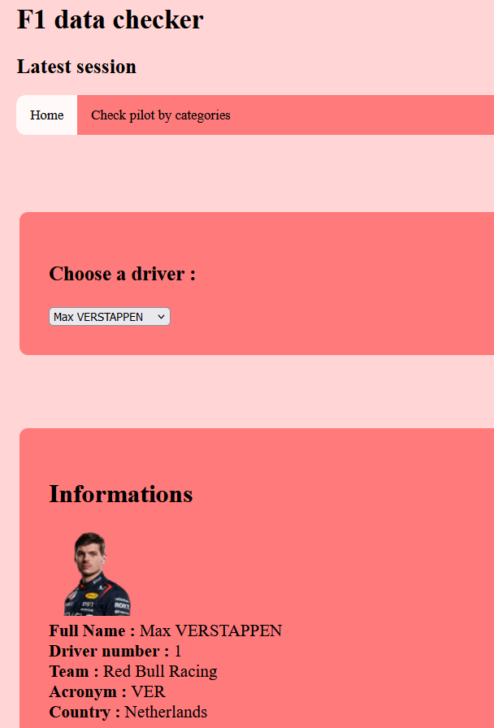
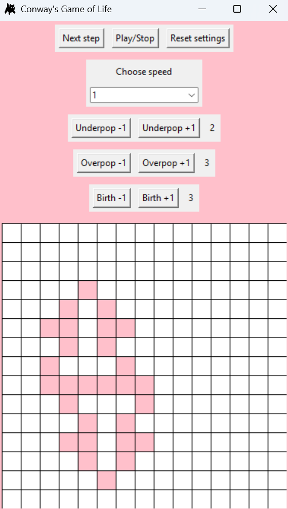

Bienvenue
Accueil
Accueil
Loisirs
CV
Fun facts
À propos de ce site
Site web personnel hébergé par GitHub présentant mon CV, mes passions et bientôt mes projets personnels
Mon GitHub avec des projets entre 2020 et aujourd'hui
Projets

Début d'un site d'information sur la F1 avec l'API OpenF1 (apprentissage de fetch)
Jeu de la vie mais girly pop un peu

 Mon GitHub avec des projets entre 2020 et aujourd'hui
Mon GitHub avec des projets entre 2020 et aujourd'hui